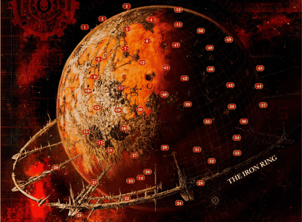

Phobos
| Phobos | |
|---|---|
| Inner moon of Mars | |
 Mechanicus chart of Martian orbit, with the Ring of Iron and the stations of the inner defence lines Artwork © Games Workshop | |
| Primary | Mars |
| System | Sol System, Segmentum Solar |
| Classification | Fortified moon; orbital weapons platform |
| Ruler | Fabricator-General of Mars |
| Fortified | Late Dark Age of Technology (estimated); refitted after the Schism of Mars, c. 014–020.M31 (estimated) |
| Notable events | Schism of Mars (005–006.M31); War of the Beast (544–546.M32); Necron raid on Mars (998.M41) |
| Physical data | |
| Diameter | c. 22 km (mean) |
| Orbit | c. 6,000 km above the Martian surface; about three circuits a Martian day |
| Neighbours | Ring of Iron; Deimos (formerly) |
Phobos is the larger and inner of the two natural moons of Mars, the homeworld of the Adeptus Mechanicus in the Sol System. It is a small, irregular body of dark rock that orbits close above the Martian surface, inside the band of shipyards called the Ring of Iron. Since at least the 31st millennium it has carried the Phobos line, a chain of orbital batteries and void-shield stations that forms the last ring of the planet's defences.[1][2]
Phobos is the only moon still in Martian orbit. Its twin, Deimos, was moved to the orbit of Saturn and given to the Grey Knights as a forge world. Phobos is governed directly by the Fabricator-General and is closed to anyone outside the priesthood and the Imperial Navy.[1]
Name
[edit]The name is older than the Imperium and appears in the oldest Terran star charts kept by the Administratum. Mechanicus usage keeps it unchanged. The Phobos pattern of the Land Raider, the standard pattern since the Great Crusade, bears the same name; Mechanicus records do not say whether the pattern was named for the moon or for the forges that first built it.[1][a]
History
[edit]Before the Imperium
[edit]Mechanicus chronicles hold that Phobos was mined and hollowed during the Dark Age of Technology, when the settlers of Mars used both moons as stations for the traffic between Mars and Terra. The first weapon emplacements on its surface are thought to date from the last years of that age or the first wars of the Age of Strife, when the forges of Mars fought one another and the moon changed hands several times. No exact date survives, and the dating rests on the style of the oldest bunkers.[1][b]
Great Crusade and Horus Heresy
[edit]After the Treaty of Olympus of 739.M30, Phobos became part of the defences that guarded the shipyards building the expedition fleets of the Great Crusade. During the Schism of Mars in 005–006.M31, the orbital stations of Mars were contested between loyalist and traitor adepts, and the Dark Mechanicum struck at the Ring of Iron from them. Which side held Phobos, and for how long, is not stated in any open record of the Horus Heresy. The surviving accounts describe only the loyalist blockade of Mars from Terra, which lasted until the planet was retaken during the Great Scouring.[3][1]
Rebuilding of the defences
[edit]The reformed Adeptus Mechanicus rebuilt the Martian defences in the decades after the Siege, and Imperial histories date the Phobos line in its present form to that period, about 014–020.M31. In 544–546.M32, during the War of the Beast, Ork forces entered the Sol System and Mars came under attack. The defences of Phobos are recorded as having been brought to full readiness, though the main Ork assault fell on Terra.[1][2][c]
Necron raid of 998.M41
[edit]In 998.M41 a squadron of Necron Shroud-class light cruisers passed the outer defences of the Sol System. They avoided the outer minefield and ran past the Deimos chain of weapons platforms. The Phobos line damaged one of the cruisers, which the others then destroyed themselves. The remaining ships attacked the deep mines of Mars before bombers of the Imperial Navy found and destroyed them. The incident led the Mechanicus to seal the Noctis Labyrinthus behind an exclusion zone.[1][2]
Era Indomitus
[edit]Since the opening of the Great Rift in 999.M41, the defences of Mars have been strengthened as part of the general fortification of the Sol System ordered by Roboute Guilliman at the start of the Era Indomitus. The Phobos line is now said to be one of the most heavily armed orbital positions in the Segmentum Solar.[4]
Description
[edit]Phobos is an irregular body about twenty-two kilometres across, scarred by a single great crater. It orbits so close to Mars that it rises in the west and sets in the east of the Martian sky two or three times each day. The surface is covered in weapon batteries, sensor towers and shield generators, linked by tunnels cut through the rock. Its garrison is made up of Skitarii, servitors and gun crews of the Navy, rotated from the Ring of Iron.[1]
The weapons of Phobos are trained on the approaches to the planet and on the Ring of Iron itself. Mechanicus doctrine holds that an enemy who takes the Ring must be denied the space below it, and the Phobos guns are laid to make that possible.[1]
Timeline
[edit]| Date | Event |
|---|---|
| Late Dark Age of Technology (estimated) | Phobos hollowed and first fortified |
| 739.M30 | Treaty of Olympus; Phobos part of the defences of the Crusade shipyards |
| 005–006.M31 | Schism of Mars; the moon's fate unrecorded |
| c. 014–020.M31 (estimated) | Phobos line rebuilt in its present form |
| 544–546.M32 | War of the Beast; defences on full alert |
| 998.M41 | Phobos line damages a Necron cruiser during the raid on Mars |
| Early M42 | Defences strengthened in the Era Indomitus |
See also
[edit]Notes
[edit]- ^ Martian vehicle patterns are often named after places in the Sol System, among them the Deimos and Mars patterns. The link between the name of a pattern and the place where it was made is not always direct.
- ^ Date estimated from Mechanicus surveys of the moon's oldest structures.
- ^ Date for the rebuilding estimated from the sequence of the Great Scouring and the reform of the Mechanicus.
References
[edit]- ^ a b c d e f g h i Codex: Adeptus Mechanicus (8th Edition), pp. 15, 22, 35. Games Workshop.
- ^ a b c Codex: Grey Knights (7th Edition), pp. 25, 182, 208. Games Workshop.
- ^ Codex: Grey Knights (5th Edition), pg. 11. Games Workshop.
- ^ Imperial Armour Volume Two: Second Edition - War Machines of the Adeptus Astartes, pp. 204-205. Games Workshop.